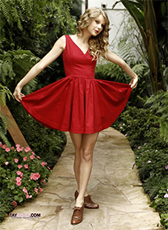
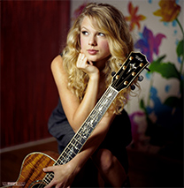
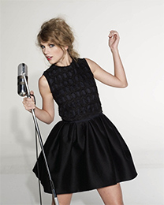

-

Taylor's mom wanted to name her Taylor because if you saw her name on a business card you wouldn't know if it was a boy or girl.
-
“Fearless is having fears but jumping anyway.”
-

On inking
Taylor says she almost definitely wouldn't get a real tattoo, as she doesn't think she could commit to any one saying or symbol for the rest of her life.
-

She's a bookworm
Swift enjoyed both reading and writing poetry and was particularly drawn to the works of Shel Silverstein and Dr. Seuss when she was growing up.
-
“The perfection of love is that it's not perfect.”
-
“People haven’t always been there for me, but music always has.”
-
Taylor wrote a 350-page novel at the age of 12 which has never been published.
-
Taylor has a younger brother, Austin, who goes to Vanderbilt University and freelances for Getty Images as a photographer in his spare time.
-
“All you need to do to be my friend is to like me.”
-
The looks
When it comes to fashion, Swift favors retro style and it has been said that she has the look of "a nineteen-thirties movie siren ... red lipstick, thick mascara”.